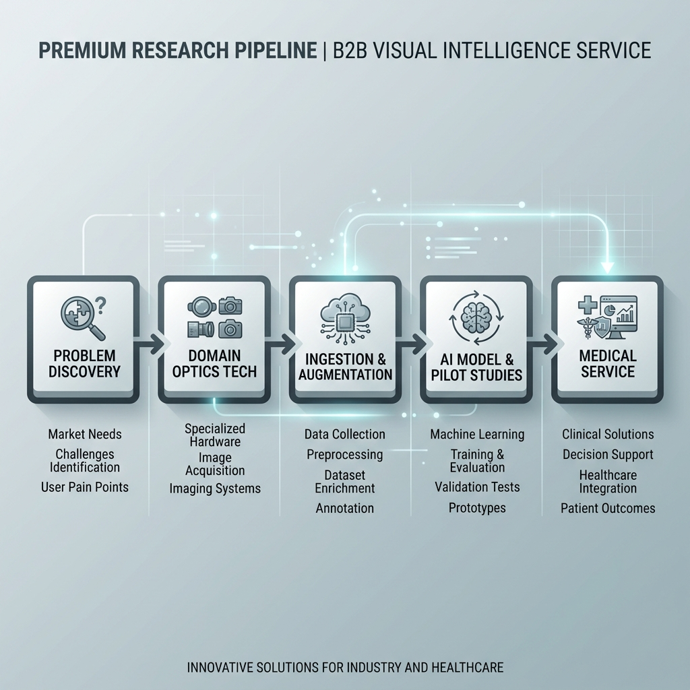

Services & Partnership
Collaborate with us to advance visual science and prototype development.
🔬 Clinical Studies & Validation
We conduct custom validation studies for specialty lenses and peripheral myopia control devices. Under strict clinical methodologies, we verify optical parameters and compile structured diagnostic validation reports.
⚙️ Custom Hardware Prototyping
Engineering support for building optoelectronic setups. We integrate Basler/FLIR cameras, telecentric lenses, LED stimulators, and custom SBC nodes (Jetson/RPi) designed for eye tracking.
💻 Software & AI Integration
Integrate pupil tracking and corneo-scleral mesh calculation algorithms into your legacy clinical devices. We deliver high-fidelity PyTorch model checkpoints and robust WebSocket APIs.
🎓 Expert Seminars & Semiotics
We provide technology training seminars and design consultations in visual science, optical calibration, and non-invasive biometric diagnostics for corporate research and clinical departments.
B2B R&D Pipeline Architecture
We provide a complete, integrated cyber-physical pipeline spanning high-speed optical hardware, local edge ingestion nodes, high-performance GPU AI training servers (optinex-station), and certified SaaS productization endpoints.
Optinex Research_R&D_Pipeline
├── Hardware_Stack (Edge Sensing Unit)
│ ├── Cameras (Industrial Image & Video Capture)
│ │ ├── acA 1300-60gm NIR (Infrared Mono Camera)
│ │ ├── acA 1300-60gc (Color Camera)
│ │ ├── a2A 1920-160um BAS (High-resolution Camera)
│ │ ├── Flir BFS-U3-13Y3M-C (Polarization Optical Camera)
│ │ └── small camera modules (Raspberry Pi & Jetson Developer Kits)
│ ├── Lenses (Core Focal Range)
│ │ └── 8mm, 12mm, 16mm, 24mm, telecentric Geometrical Optics Lenses
│ └── Controllers (Stimulation & Lighting)
│ ├── LED & Buzzer Scheduler
│ └── Infrared Light Source
├── Edge_Computing_Node (Real-time Processing)
│ ├── SBC Testbeds (On-field Evaluation)
│ │ ├── J4012 Developer Kit
│ │ ├── Jetson Orin Nano Super
│ │ └── Raspberry Pi 5 + hailo 8
│ └── Ingestion (Network Transfer)
│ └── RPi 5 + WD 1TB via USB LAN interface (1Gbps Wired Connection)
├── Cloud_AI_Station (optinex-station Compute)
│ ├── Compute Hardware
│ │ ├── AMD Ryzen 9 7950X CPU
│ │ ├── Palit GeForce RTX 5070 Ti D7 16GB
│ │ └── G.Skill DDR5-6000 CL30 Flare X5 64GB RAM
│ └── Building Vector Database (RAG Knowledge Search DB)
│ └── ChromaDB Vector Store (Crawling & indexing papers daily 09:00 - 22:00)
├── Self_Evolving_Agent (Software AI Architecture)
│ ├── PyTorch closed-loop learning node (Autonomous neural weight updates)
│ └── Telegram Admin Gateway (Self-reporting & clinical decision control loops)
└── B2B_Medical_Service_Delivery (Productized Output)
├── HIPAA database encryption vaults (Secure patient storage)
└── Clinician Web Portal (Real-time corneo-scleral fitting & pupil diagnostics)
From Identification to Productization
Our collaborative services guide B2B partners through a structured, end-to-end engineering journey:
1. Optical Problem Discovery 🎯
Collaboratively identify clinical gaps and visual correction needs (e.g., peripheral defocus, low-contrast summation issues, scleral profile mismatches) to formalize a rigorous project roadmap.
2. Optics & Domain Expertise Integration 🔬
Formulate optometric sensor parameters, match correct focal lenses (8mm to 24mm, or Telecentric setups), and configure the LED & buzzer scheduler triggers designed for capturing precise eye reactions.
3. Standardized Ocular Data Acquisition & Augmentation 📸
Deploy Basler or FLIR camera sensor modules and gather high-speed raw video frames. Locally pre-processed frames are augmented and synced to our server for RAG indexing and model dataset curation.
4. Custom AI Modeling & Clinical Pilot Studies 🧠
Develop customized deep learning architectures (such as corneo-scleral mesh fitting or pupil Sample Entropy tracking) using optinex-station's GPU stack. Run localized clinical pilot validation trials under controlled IRB parameters.
5. B2B Medical Service Delivery 🏥
Establish secure HIPAA cloud storage pipelines and integrate analytics endpoints. Deliver the finalized, certified Clinician Web Portal dashboard service ready for real-world diagnostic assistance.
